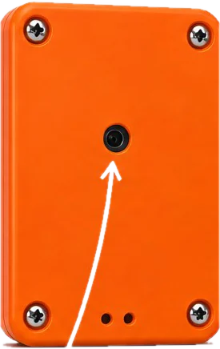
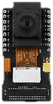
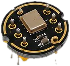
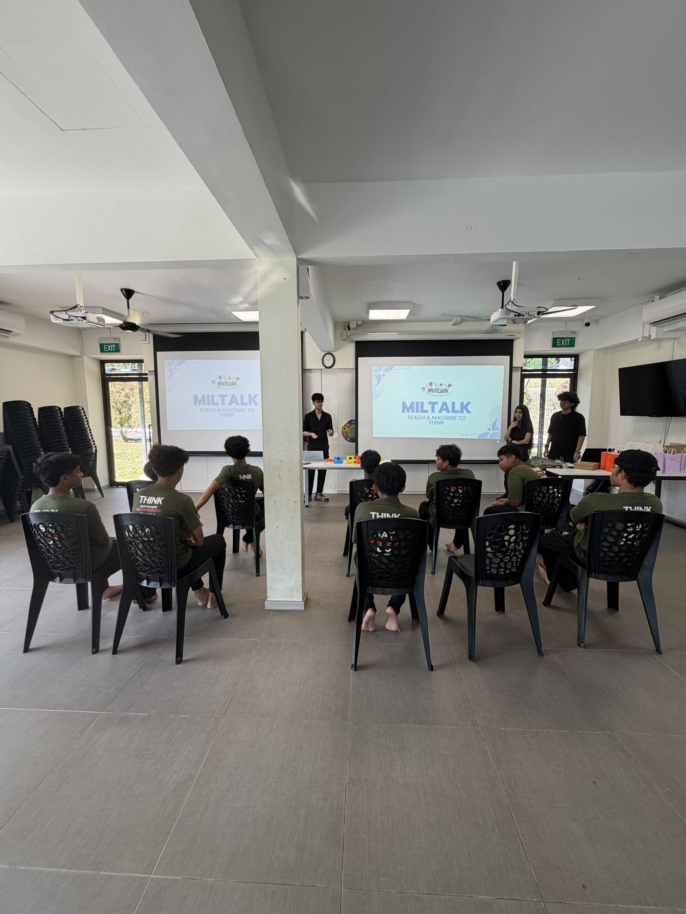
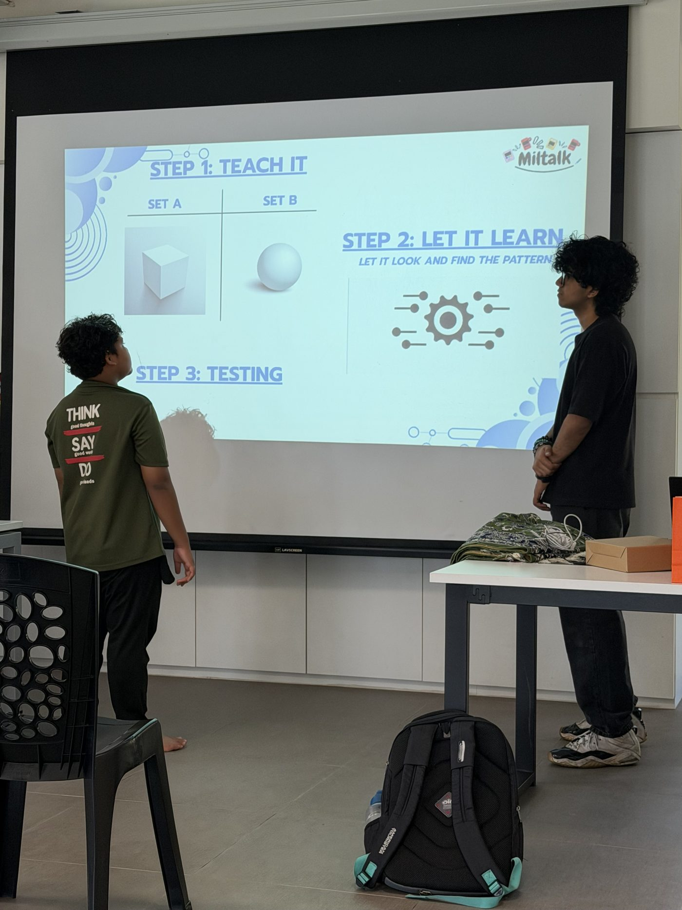
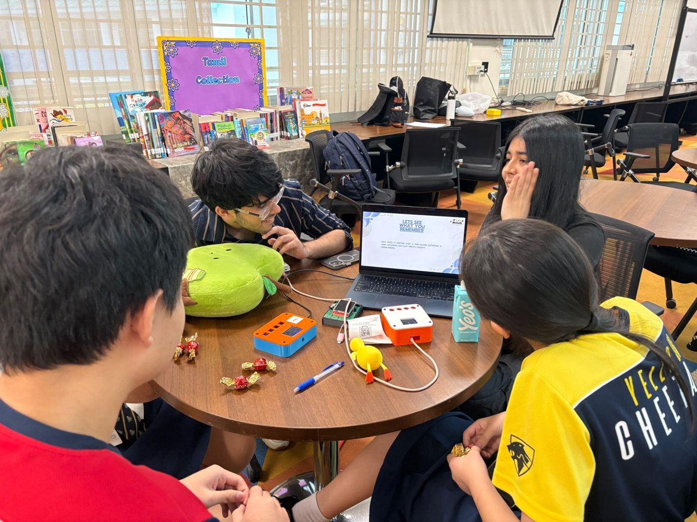

An AI’s judgment isonly as good as its data
Train it only on bright snacks and watch it fail on a dark one. Bias stops being an abstract word and becomes something they caused, and can fix.

Students use AI every day, and it’s easy to treat what it says as the truth. But every AI system, from face unlock to a chatbot, learned from examples that people gave it. When those examples are narrow, messy or biased, so is the AI.
That’s the instinct Miltalk builds. Not just how to use AI, but how to question it: what was it trained on, how sure is it, and why might it be wrong?
Miltalk is a handheld kit that lets students teach a machine from scratch. With a camera or microphone, a small screen and a few buttons, they show it examples of two kinds of things, then test it on something new and see how confident it is, and whether it’s right.
Then comes the part that matters. When it gets something wrong, they work out why, fix the examples, and watch it improve. Nobody has to tell them an AI is only as good as its data; they see it happen.
Miltalk isn’t ChatGPT. It’s the same core idea, learning from examples, small enough to see every step. No laptop, internet or account needed. Built for ages 12 to 15, and for educators who want to teach AI as something to investigate, not take on faith.

Look, spot, discover


Helps children collect pictures and try out their own sorting ideas.
A and B are your two categories, not random buttons. Press one, then show the kit a few examples of that kind of thing. Switch buttons for the second category.
Show it something new and get back a prediction plus a confidence score, how sure it is, not just a yes or no.
A wrong guess isn't a failure; it's a clue. Check the confidence score, then think about why: different lighting? a new angle? Add another example, or hit Reset to start clean.
Once it's trained, try something from a third category it's never seen at all. Does it force an answer anyway? How confident is it when it's clearly just guessing? That's exactly how real-world image classifiers reveal the edges of what they've actually learned, not just what they were shown.
Listen, clap, discover


Invites children to clap, whistle, talk and explore the sounds around them.
A and B are your two sound categories, not random buttons. Press one, then make a few examples of that kind of sound. Switch buttons for the second category.
Make a new sound and get back a prediction plus a confidence score, how sure it is, not just a yes or no.
A wrong guess isn't a failure; it's a clue. Check the confidence score, then think about why: too quiet? too close to the other category? Add another example, or hit Reset to start clean.
Try a completely unrelated “trick” sound it's never heard. Does it still force a guess? How sure does it seem? That's one of the best ways to see where a model's confidence is real, and where it's just doing its best with something unfamiliar.
Train it only on bright snacks and watch it fail on a dark one. Bias stops being an abstract word and becomes something they caused, and can fix.
Deciding what makes two things different, then checking if the machine agrees.
Understanding that “80% sure” and “51% sure” mean different things, and that a system can be uncertain.
When a guess is wrong, figuring out which example to add or change, rather than retrying randomly.
After building one themselves, “AI” stops being a buzzword and becomes a mechanism they understand, which makes overblown claims much easier to spot.
Miltalk has been tested with real students in real classrooms. In both pilots, students reached the core idea on their own: a machine’s answers come from the examples it’s given.
Pilot · August 2026
Our first pilot, with 13–15 year-olds using both kits, gave us our strongest early signal: students kept experimenting long after the structured activity ended, on their own initiative.
One student, unprompted, worked out that the device wasn’t “knowing” answers; it was comparing new things to what it had already seen. That’s an accurate description of how classification works, reached independently by a 13-year-old during free play.



Pilot · October 2026
Students didn’t just spot the classifier’s mistakes; they diagnosed them, tracing wrong guesses back to the examples it had been given and proposing better data to fix them. That’s exactly the instinct Miltalk is built to develop.
Asked where classification could help in real life, they pointed to their own school’s security cameras, which often fail to recognise students, and suggested training on uniform colours and the school logo. In a single session, they went from learning the idea to applying it to a problem they actually face.


A mentor who observed the pilot noted that Miltalk felt less like a standalone activity and more like something that could sit inside an actual curriculum, a strong signal that the format has real pedagogical legs, not just novelty appeal.
Miltalk has been awarded up to S$8,000 in funding through SUTD.
That moment, when a guess comes back wrong and a student works out why, is the whole reason Miltalk exists.
Get in touch
We run hands-on sessions for schools and community groups. Tell us about yours and we’ll take it from there.
Contact us